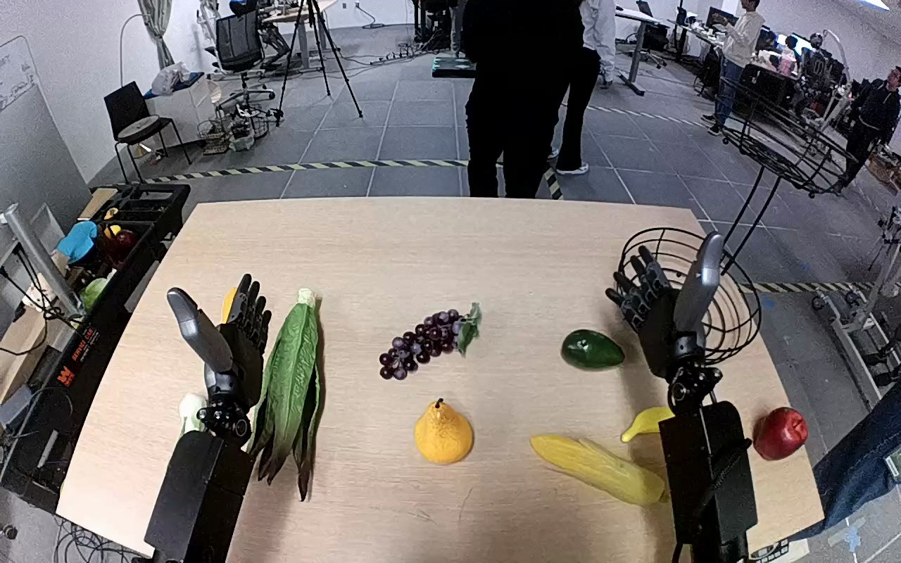

NVIDIA GR1 · 86
Video 86

Visual review action_review.json
{
"prompt_protocol": "humanoid_action_v1",
"prompt_provenance": "visually_authored_from_video_and_initial_frame",
"reviewed_contact_sheets": [
"sheet_001.jpg"
],
"inspected_frame_stride": 2,
"inspected_sampled_frame_count": 60,
"initial_scene": "Robot-centered forward/downward view of both forearms extending from the bottom toward a tabletop. Red apple rests at the right table edge, below the black wire basket lower tier containing a green fruit. Left hand is open beside leafy vegetables; right hand initially is open in front of the basket.",
"observed_sequence": [
{
"start_frame": 0,
"end_frame": 26,
"action": "Right open hand moves outward to the right, clearing the basket and beginning approach toward the red apple; left hand stays open beside the vegetables.",
"confidence": "high"
},
{
"start_frame": 27,
"end_frame": 76,
"action": "Right hand lowers and rotates toward the red apple, placing thumb and fingers around it while it remains on the tabletop.",
"confidence": "high"
},
{
"start_frame": 77,
"end_frame": 96,
"action": "Right fingers close around the apple and secure it; left hand remains inactive.",
"confidence": "high"
},
{
"start_frame": 97,
"end_frame": 112,
"action": "Right hand lifts the apple from the tabletop and carries it upward/inward into the lower basket tier beside the green fruit.",
"confidence": "high"
},
{
"start_frame": 113,
"end_frame": 119,
"action": "Right hand opens above the lower tier, releasing the apple; final apple is visibly separate from the open hand and remains inside the basket beside the green fruit.",
"confidence": "high"
}
],
"arm_hand_roles": {
"right": "Active hand: approaches, grasps, lifts, transports and releases the red apple into the basket lower tier.",
"left": "Open and essentially stationary throughout; no supporting grasp, transfer or manipulation."
},
"anatomical_side_evidence": {
"description": "The camera looks forward over the paired robot forearms from the robot side of the table. Forearms extend outward from the lower left and lower right edges without crossing; the manipulating limb remains continuous with the lower-right forearm. The symmetric open hands show thumbs on their outward sides in the initial palms-facing-robot pose, supporting the egocentric right/left assignment. This matches, but is established independently of, the source right-hand instruction.",
"confidence": "high",
"limitation": "Shoulder attachment and torso are outside the camera field; anatomical assignment uses the robot-centered forward view and paired hand/forearm geometry."
},
"coordination": "Single-hand manipulation. Left hand does not support the apple or basket, and there is no hand-to-hand transfer or interaction with a person.",
"terminal_state": "Red apple rests inside the lower wire basket tier beside the preexisting green fruit; right fingers are open above and to its right, and the left hand remains open near the vegetables.",
"uncertainties": [
"The shoulders and torso are outside the field of view; side identification relies on the robot-centered view and visible paired forearm/hand geometry."
],
"annotation_discrepancies": [],
"evidence_frame_indices": [
0,
26,
50,
76,
90,
102,
112,
116,
119
],
"selected_execution_status": "success",
"inspection_coverage": {
"complete_original_video": true,
"sampled_source_frames": "0 through 118 inclusive, stride 2",
"native_source_initial_png_viewed": true,
"native_transition_and_final_frames_viewed": [
0,
26,
50,
76,
90,
102,
112,
116,
119
],
"total_source_frames": 120
},
"video_id": "86",
"dataset": "NVIDIA_GR1_100",
"dedicated_review_agent": "review_gr1_86",
"review_source_video": "NVIDIA_GR1_100/86/original/original.mp4",
"source_frame_count": 120,
"source_fps": 20.0,
"native_detail_frames": [
0,
26,
50,
76,
90,
102,
112,
116,
119
],
"world_model_prompt": "The robot uses its right hand to grasp the red apple at the right edge of the table, closing its fingers around it and lifting it clear. It carries the apple into the lower tier of the black wire fruit basket and opens its hand, leaving the apple beside the green fruit. Keep the camera fixed; preserve robot geometry, physically valid joint motion, and normal gripper opening and closing.",
"original_task_instruction": "Use the right hand to pick up red apple from right side of table to lower level of black fruit basket.",
"selected_segment": {
"start_frame": 0,
"end_frame_exclusive": 120,
"reason": "Complete original single-task reference; no cropping or trimming requested."
},
"source_video_sha256": "14cb7a82303a885e2767aa4ec2d656b5bc1bbf94652030189f45951fc41399f7",
"review_completed_at": "2026-10-13T18:37:04.514950+00:00"
}